Gestion de la configuration¶
La gestion de la configuration consiste à gérer la description technique d’un système, ainsi qu’à gérer tous les changements effectués lors de l’évolution du système.
C’est l’ensemble des processus pour assurer la conformité d’un produit aux exigences, tout au long de son cycle de vie.
En informatique, par exemple, la gestion de la configuration peut être utilisée à de nombreuses fins.
Pour stocker et tracer les différentes versions ou révisions de toute information destinée à être utilisée par un système (matériel, logiciel, document, données unitaires, etc.).
Pour déployer des configurations dans un parc informatique sous forme de fichiers et de données.
Gérer les codes sources…
Produits¶
Permet de définir un produit et des sous-produits.
Permet de lier des composants au produit.
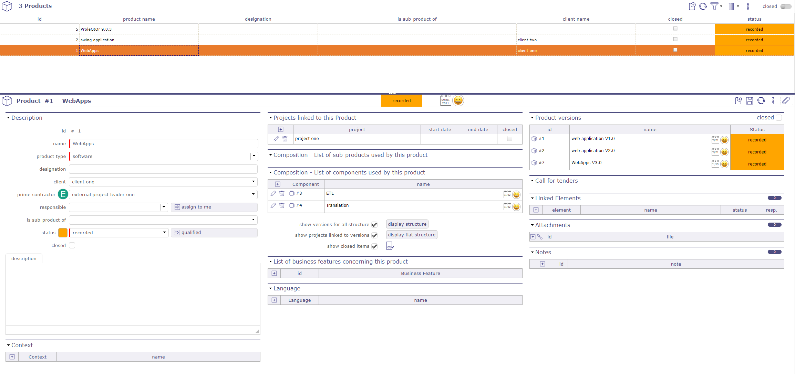
Écran de configuration du produit¶
Vous pouvez créer de nombreux liens entre les produits, les versions de produits et les composants
Projet lié à ce produit¶
Possibilité d’attacher les produits de la liste à des projets.
Lorsque vous liez un projet à un produit, toutes les versions de ce produit seront liées.
La date de début et de fin correspond à la durée de ce lien.
Composition¶
Liste des sous-produits et liste des composants utilisés par ce produit
Voir aussi
Structure¶
Vous pouvez afficher la structure de 2 façons. Normal et plat.
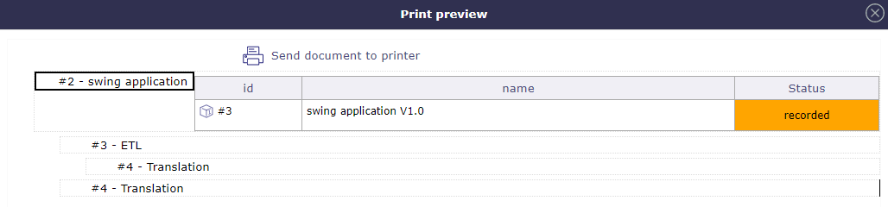
Affichage normal de la structure du produit¶
Case cochée « Afficher les versions pour toute la structure » permet d’afficher les versions des sous-produits et des composants.
Case cochée « Afficher les projets liés aux versions » permet d’afficher les projets liés.
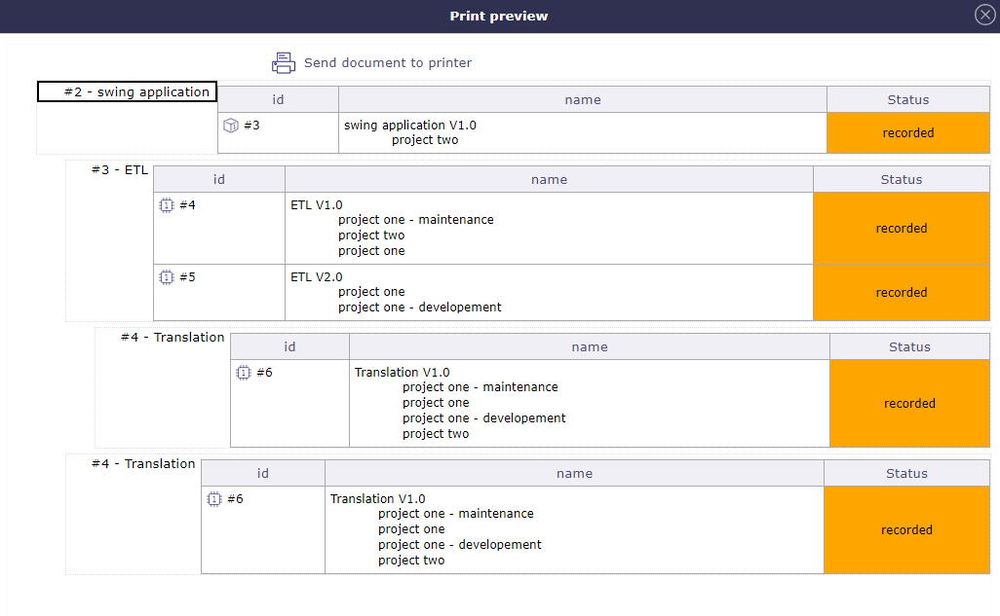
Afficher la structure du produit avec les cases cochées¶
Versions du produit¶
Permet de définir des versions d’un produit.
Permet de lier une version de composant à une version de produit.
Permet de lier la version du produit à un projet.
Possibilité de définir la compatibilité entre les versions de produits (fonctionnalité activée via un paramètre global)
Formatage automatique du nom de version¶
Possibilité de définir si le nom de version est automatiquement produit à partir du nom du produit et du numéro de version.
Définissez les Paramètres globaux pour activer cette fonctionnalité.
Sinon, le nom de version sera saisi manuellement.
Par profil, possibilité d’avoir une liste différente de la version du produit d’origine selon le statut.
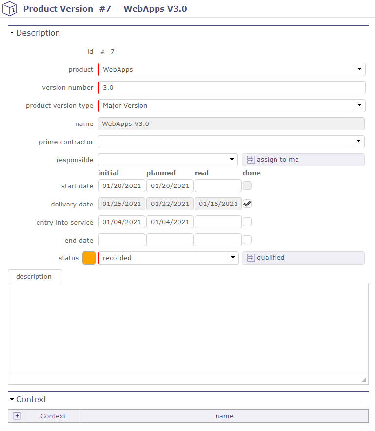
Description de la version du produit¶
Numéro de version & Nom
Le champ « Numéro de version » n’apparaît que si le paramètre global « Format automatique du nom de version » est défini sur Oui.
Le champ « Nom » sera en lecture seule.
Maître d’œuvre
Le champ « Maître d’œuvre » peut être différent du maître d’œuvre du produit.
Mise en service (Réelle)
Le champ « Mise en service » spécifie la date de mise en service.
La case « Terminé » est cochée lorsque le champ date réelle est défini.
Date de fin (Réelle)
Le champ « Date de fin » spécifie la date de fin de service.
La case « Terminé » est cochée lorsque le champ date réelle est défini.
Composants¶
Permet de définir des composants de produit.
Permet de définir les produits utilisant le composant.
Possibilité de définir des types de composants et des versions de composants qui ne seront utilisés que pour la définition de la structure (pas pour la Planification de version ou les Tickets)
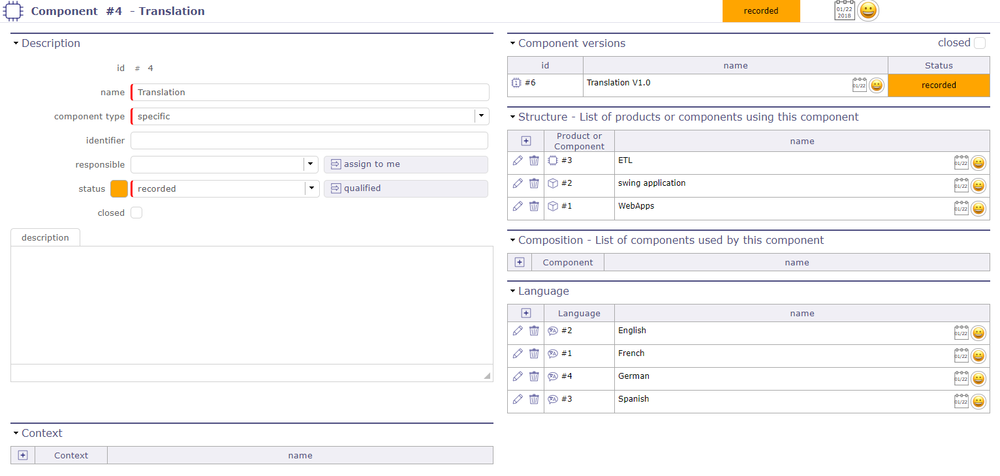
Détails du composant¶
Liste des versions définies pour le composant.
Les versions de composant sont définies dans l’écran Versions du composant.
Versions du composant¶
Permet de définir des versions d’un composant.
Permet de lier une version de produit à une version de composant.
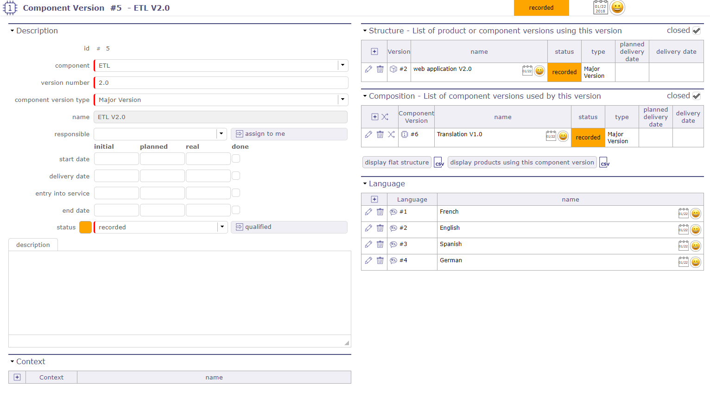
Détails de la version du composant¶
Note
Possibilité de définir si le nom de version est automatiquement produit à partir du nom du composant et du numéro de version.
Définissez les paramètres globaux pour activer cette fonctionnalité. Sinon, le nom de version sera saisi manuellement.
Numéro de version & Nom
Le champ « Numéro de version » n’apparaît que si le paramètre global « Format automatique du nom de version » est défini sur Oui.
Le champ « Nom » sera en lecture seule.
Mise en service (Réelle)
Le champ « Mise en service » spécifie la date de mise en service.
La case « Terminé » est cochée lorsque le champ date réelle est défini.
Date de fin (Réelle)
Le champ « Date de fin » spécifie la date de fin de service.
La case « Terminé » est cochée lorsque le champ date réelle est défini.
Note
Date initiale : lorsque la date planifiée a été définie, la date initiale (si elle est vide uniquement) sera définie
Relations¶
Éléments produit et composant¶
Permet de gérer les relations entre les produits et les composants pour définir la structure du produit.
Voir les relations possibles : Structure du produit
Gestion des relations
Cliquez sur
 pour créer une nouvelle relation. La boîte de dialogue « Structure » apparaît.
pour créer une nouvelle relation. La boîte de dialogue « Structure » apparaît.Cliquez sur
 pour supprimer la relation correspondante.
pour supprimer la relation correspondante.
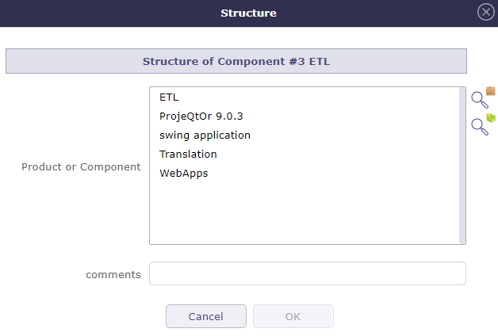
Structure¶
Versions des produits et des composants¶
Permet de définir des liens entre les versions des produits et des composants.
Note
Uniquement avec les éléments définis dans la structure du produit.
Gestion des liens
Cliquez sur
pour créer un nouveau lien. La boîte de dialogue « Structure de version » apparaît.Cliquez sur
pour supprimer le lien correspondant.
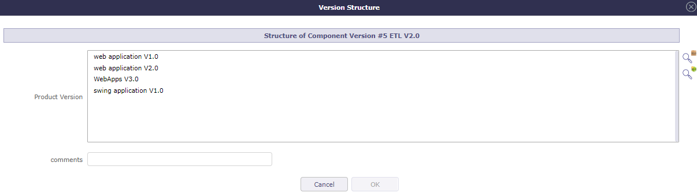
Structure de version¶
version vers les projets¶
Cette section permet de gérer les liens entre les projets et les versions des produits.
Gestion des liens version-projets
Cliquez sur
pour créer un nouveau lien.Cliquez sur
 pour mettre à jour un lien existant.
pour mettre à jour un lien existant.Cliquez sur
pour supprimer le lien correspondant.
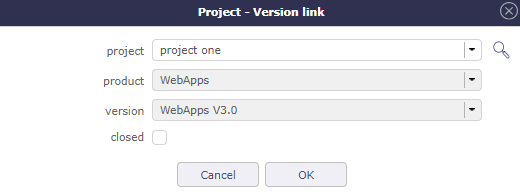
Lien Projet / Version¶
Planification des versions¶
Sélectionnez une ou plusieurs versions de produit et la planification de version est affichée.
Cette planification affiche chaque version des versions de produit sélectionnées et leurs composants de la date de début définie à la date de livraison.
Pour l’utiliser, définissez vos dates de début et de livraison dans la Version du produit et la Version du composant.
Note
Pour insérer des valeurs, vous devez activer l’affichage des jalons de début et de livraison dans les paramètres globaux, sinon ces champs sont masqués.
Cet écran permet de voir si la date de livraison des versions de composant est plus tardive que celle de leurs versions de produit.
Graphiquement, vous pouvez voir tout retard ou incompatibilité.
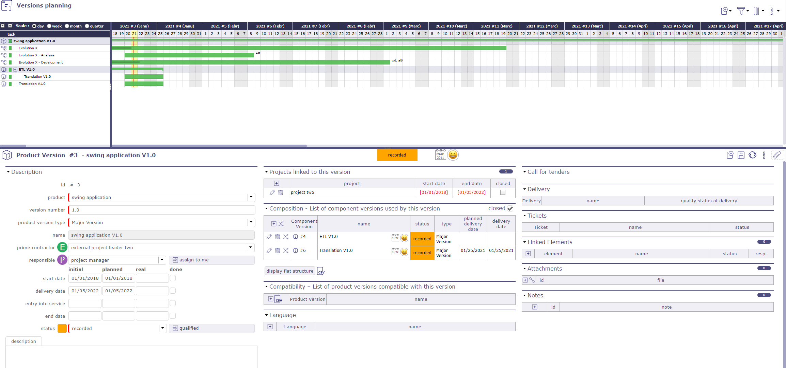
Planification de version¶
Options d’affichage
Cliquez sur pour ajouter une activité. Cliquez sur  pour filtrer l’affichage des versions.
pour filtrer l’affichage des versions.
{kind=link}
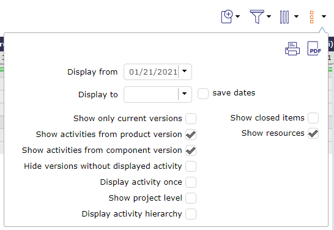
Options de planification des versions¶
Cliquez sur Afficher les activités de la version du produit ou Afficher les activités de la version du composant pour afficher les activités associées.
De nouvelles cases à cocher apparaîtront : une pour afficher les ressources et l’autre pour afficher ou masquer les versions sans activité affichée.
Vous devez sélectionner une activité existante pour insérer la nouvelle activité dans la structure WBS.
Si aucune activité n’est sélectionnée, l’icône « ajouter un nouvel élément » sera grisée.
La nouvelle activité est automatiquement insérée après l’activité sélectionnée.
La nouvelle activité est générée sur le même projet, avec le même composant, la même version de composant, et avec le même produit et la même version de produit si ces éléments sont renseignés sur l’activité d’origine.
L’insertion à partir de la sélection d’une version de produit et de composant ne sera pas possible car nous ne savons pas où l’insérer dans le WBS des projets.